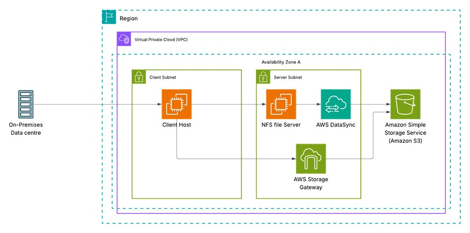

Hybrid Cloud Migration: On-Prem NFS to AWS
Using AWS DataSync and AWS Storage Gateway
Overview
As an AWS Certified Solutions Architect, I designed and implemented a hybrid storage migration solution to move on-premises NFS workloads to AWS.
The objective was to securely migrate file data while maintaining hybrid accessibility, minimizing downtime, and ensuring data integrity throughout the transition. This project simulates a real-world enterprise migration scenario where organizations need to modernize storage infrastructure without disrupting operations.
Architecture Summary
This solution leveraged the following AWS services:
- AWS DataSync for automated, high-performance data transfer
- AWS Storage Gateway (File Gateway) for hybrid file access
- Amazon S3 as the scalable storage backend
- Amazon EC2 to simulate application workloads
- IAM and CloudWatch for security and observability
The architecture enabled:
- Secure transfer of NFS data to S3
- Continued hybrid access during migration
- Centralized monitoring of transfer performance
- Integrity verification of migrated files


Design Decisions and Rationale
Why DataSync?
I selected AWS DataSync over manual transfer methods to ensure automated integrity verification, bandwidth optimization, and detailed task-level monitoring. DataSync reduces human error and accelerates migration timelines.
Why Storage Gateway (File Gateway)?
File Gateway allowed continued NFS access to S3-backed storage, enabling a phased migration strategy rather than a disruptive cutover.
Why Amazon S3?
Amazon S3 provides highly durable (11 9’s) and scalable object storage, making it ideal for long-term storage optimization and disaster recovery readiness.
Hybrid Strategy Consideration
Maintaining hybrid architecture during migration minimizes operational risk and allows teams to validate workloads before fully decommissioning on-prem systems.
Security and Governance Considerations
- Configured IAM roles following least-privilege principles
- Encrypted data in transit using TLS
- Applied S3 bucket access policies
- Monitored transfer execution using CloudWatch logs and metrics
Security and observability were treated as foundational, not optional.
Implementation Highlights
- Deployed and activated a DataSync agent
- Configured NFS source and S3 destination locations
- Executed and monitored migration tasks
- Deployed File Gateway and mounted NFS shares
- Validated file integrity and workload access post-migration
The migration was completed successfully with verified data consistency.
Business Impact
This architecture demonstrates how organizations can:
- Reduce reliance on physical storage infrastructure
- Improve disaster recovery posture
- Transition to scalable cloud storage without operational disruption
- Optimize storage costs using tiered S3 storage classes
- Maintain continuity during infrastructure modernization
Key Skills Demonstrated
- Hybrid cloud architecture design
- Storage modernization strategy
- Data migration planning and execution
- AWS IAM configuration
- Monitoring and observability
- Risk-aware cloud transition planning